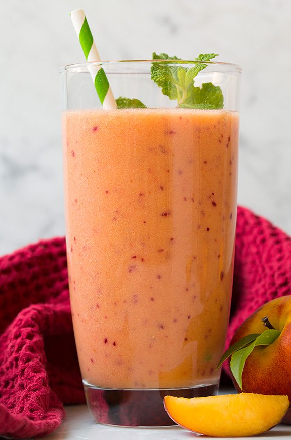

Smoothie Recipes
Website made by: Zeina Sabry
Below are some ideas for smoothie recipes that I enjoyed
Table Of Contents
- Sweet Dreams
- Heavenly
- Green Goddess
- Verry Berry
- Summer Fun
1. Sweet dreams

Perfect or a miday snack; invented by me!
Ingredients:
Half a mango
6 strawberries
1 full peach
1 cup greek yogurt
a hint of Vanilla
2 tablespons Honey
1/2 cup Milk
Blend until smooth in a blender
2. Heavenly

Perfect breakfast item if your looking for something to wake you up and give a nice start to your day
Ingredients:
6 strawberries
Half a Banana
3 scoops of Vanilla Ice Cream
1/2 Cup Milk
2 table spoons of Honey
2 table spoons peanut butter (optional)
Blend until smooth in a blender
3. Green Goddess

Lets be honest, sometimes we all just need a green smoothie to get us up and running
Ingreediends:
1 cup spinach
1 cup kale
1 full apple (no core)
1/2 celery juice
1/2 banana
1/8 ginger
1 cucumber
2 table spoons Honey
Blend until smooth in a blender
4. Verry Berry

I know, its so classic, but its good
Ingreedients:
1 cup frozen mixed berries
1 cup Vanila ice cream
2 tablespoons honey
1/2 cup Milk
2 tablespoons chia seeds (optional)
Blend until smooth in a blender
5. Summer fun

This smoothie is perfect for summer because its both refreshinng, and delicious
11/2 cups Watermelon cubed
1 cup Strawberries, trimmed
1/2 cup milk
1 tsp lemon juice
2 SPLENDA Naturals Stevia Sweetener packets
How many servings do each of these make you ask? The anser is in the table below.
| Smoothie Name |
Sweet Dreams |
Heavenly |
Green Goddess |
Verry Berry |
Summer Fun |
| Serving Nuber |
2 |
2 |
2 |
2 |
2 |